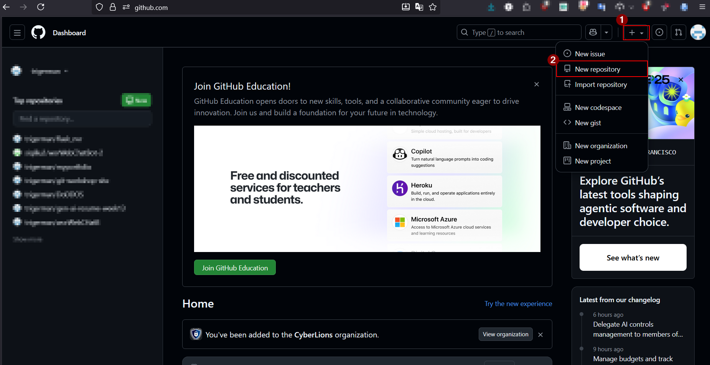

Create a fresh repository
Head to github.com/new and set up a space for your team.
- Give the project a clear name everyone recognises.
- Pick Public for open work or Private for class-only projects.
- Leave the README unchecked we'll add files from our machines.
